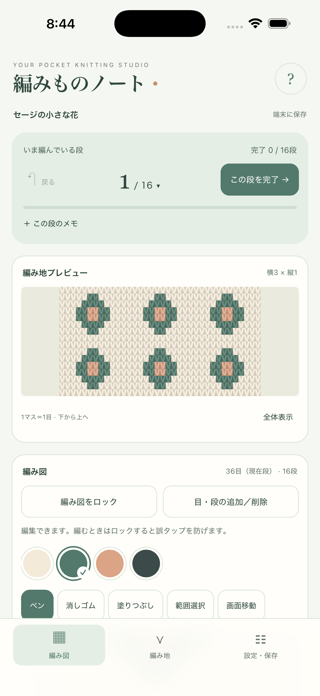

編み図と編み地がつながる
1マスが1目。同じデータから表示するので、色も繰り返しもそのまま反映。1段目は一番下です。
ONE STITCH AT A TIME
App Store版 · 公開準備中編み図と編み地を見比べながら、
次の一段を、あなたのペースで。
「編みものノート」は、棒針編み込みの模様づくりと段数管理を、ひとつにまとめたiPhoneアプリです。
App Storeではまだ配信していません。配信開始後、このページにストアへのリンクを掲載します。販売価格・配信日は未定です。

1マスが1目。同じデータから表示するので、色も繰り返しもそのまま反映。1段目は一番下です。
指定した段からの増し目・減らし目、段の挿入・削除に対応。編むときはロックして、誤タップを防げます。
現在段、完了チェック、段ごとのメモを保存。作品を書き出して、ファイルアプリにも保管できます。
編み図の編集も、写真からの柄づくりも端末内で処理します。会員登録は不要。作品を運営者のサーバーへ送信しません。
対象：iPhone・iOS 16以降を予定。編み地はイメージで、実物のゲージや寸法を再現するものではありません。Web版からの作品移行はJSONファイルの書き出し・読み込みを使います。